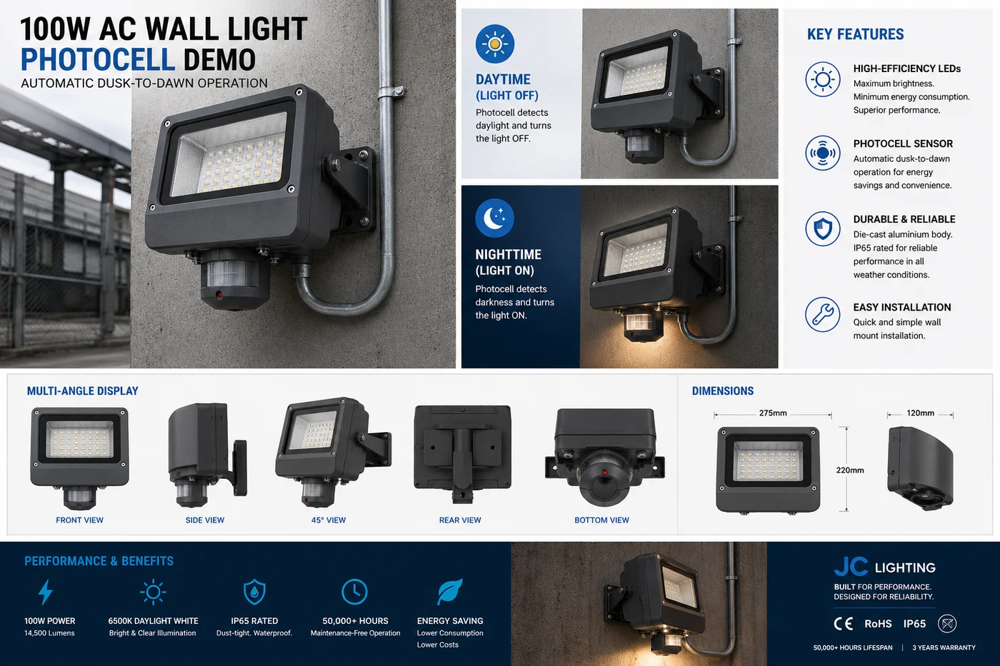

30W Solar Flood Security Light
An industrial-grade solar floodlight for warehouses, farms and worksites — 2,400 lumens, IP66 sealing and a wide PIR sensor, rated to run from –20°C to +50°C.

When the site is a warehouse yard, a farm or a remote compound, the lighting has to survive dust storms, heavy rain and temperature extremes — and keep working off-grid. This 30W floodlight steps up to IP66 sealing and a –20°C to +50°C operating range, with a 270° PIR sensor that triggers full output across a wide span.
Specifications
| Power | 30W |
|---|---|
| Luminous flux | 2,400 lm |
| Motion sensor | PIR, 10 m range, 270° |
| IP rating | IP66 — dust-tight, high-pressure water resistant |
| Operating temperature | –20°C to +50°C |
| Battery | LiFePO4 |
| Certification | CE + RoHS |
| Customisation | OEM / ODM — logo, packaging, spec tuning |
Why buyers choose it
IP66 for harsh sites. A step above IP65 — engineered for high-pressure water, heavy dust and tropical storms. IP65 vs IP66 vs IP67 explained →
Wide temperature range. –20°C to +50°C operation suits everything from highland nights to desert heat.
Industrial output. 2,400 lumens of motion-triggered light covers large yards and entrances from one unit.
Certified & OEM-ready. CE + RoHS certificates with every quotation; custom branding available.